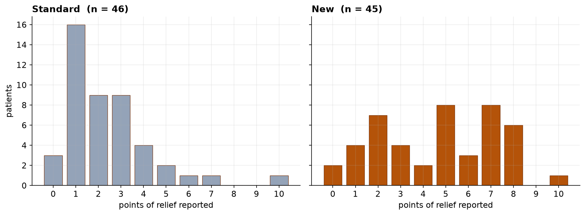
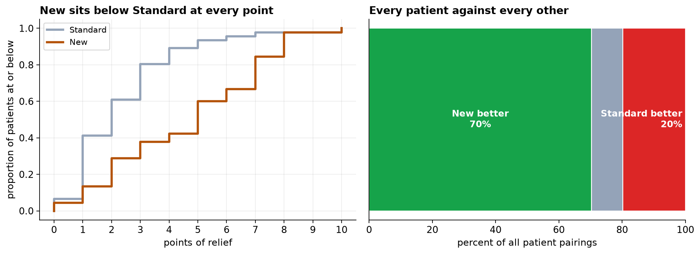

Comparison of Two Analgesics on a Patient-Reported Relief Scale: A Rank-Based Analysis
Mann-Whitney U with a probability-of-superiority effect size, and why a location-shift interpretation is not available.
Keywords: Mann-Whitney U; stochastic dominance; probability of superiority; rank-biserial correlation; ordinal outcomes; treatment effect heterogeneity; numeric rating scale.
1. Introduction
Patient-reported outcomes on numeric rating scales occupy an awkward position in trial analysis. They are recorded as integers and analyzed, very often, by methods that presume interval measurement. The presumption is not innocuous. Nothing in the administration of an 11-point relief scale establishes that the increment from 2 to 3 represents the same change in experience as the increment from 7 to 8, and there is evidence that respondents treat the endpoints differently from the interior. The scale is ordinal, and it is bounded at both ends, which alone precludes normality.
The consequence is that a difference in arithmetic means, while computable, is a quantity in undefined units. This report therefore takes the rank-based route, not primarily because the normality diagnostics fail, but because the resulting claim is one the instrument can support. The distinction matters here: as Section 5 shows, a parametric test reaches the same verdict, so the choice is about the admissible interpretation rather than about statistical conclusion.
The hypotheses are H₀: the two treatments' relief distributions are identical, against H₁: one stochastically dominates the other, evaluated two-sided at α = 0.05.
2. Data
| Step | Rule | Result |
|---|---|---|
| Raw export | — | 96 rows |
| De-duplication | drop duplicate records | 94 rows |
| Missing values | drop rows missing the outcome | 92 rows |
| Range validation | retain relief scores 0–10 | 91 rows |
| Label normalization | case-fold treatment labels | 2 arms |
| Arm | n | Median | IQR | Mean | SD | Skew |
|---|---|---|---|---|---|---|
| Standard | 46 | 2 | 1–3 | 2.39 | 1.94 | +1.71 |
| New | 45 | 5 | 2–7 | 4.67 | 2.63 | -0.09 |

The distributional difference is qualitative, not merely a matter of location. The standard arm is unimodal with mass concentrated at the low end. The new arm is bimodal, with a subgroup at the floor of the scale and a larger subgroup between five and eight, separated by a near-empty interval at four. This observation constrains the analysis that follows and is returned to in Section 6.
3. Methods
| Assumption | Test | Result | Verdict |
|---|---|---|---|
| Normality, standard arm | Shapiro-Wilk | W = 0.830, p = 9.56e-06 | violated |
| Normality, new arm | Shapiro-Wilk | W = 0.941, p = 0.024 | violated |
| Homogeneity of variance | Levene | p = 0.0058 | violated |
| Homogeneity of variance | Bartlett | p = 0.0445 | violated |
The Mann-Whitney U test was specified as primary. Effect size is reported as the probability of superiority, P(X > Y) + ½P(X = Y), computed directly by enumerating all cross-group pairings, together with the rank-biserial correlation r = 2P − 1. The Hodges-Lehmann estimator, the median of all cross-group differences, is reported as an indication of magnitude with the caveat noted in Section 4. Analyses used SciPy in Python 3.
4. Results
| Statistic | Value |
|---|---|
| Mann-Whitney U | 1557.5 |
| p-value (two-sided) | 2.79e-05 |
| Probability of superiority | 0.752 |
| Rank-biserial correlation | 0.505 |
| Hodges-Lehmann estimate | +2.0 points |
| n (new / standard) | 45 / 46 |
| Cross-group pairing outcome | Count | Percent |
|---|---|---|
| New reported greater relief | 1455 | 70.3% |
| Tied | 205 | 9.9% |
| Standard reported greater relief | 410 | 19.8% |
| Total pairings | 2070 | 100% |

The empirical cumulative distribution for the new treatment lies at or below that of the standard treatment across the entire range, and strictly below through the interior of the scale. This is the graphical statement of stochastic dominance: at any threshold that might be adopted as a clinical criterion, a smaller proportion of new-treatment patients fall short of it.
5. What the test does not establish
The Mann-Whitney procedure is frequently described as a nonparametric test of medians. Under the general two-sample problem it is not. It tests whether one distribution stochastically dominates the other; the reduction to a statement about medians requires the additional assumption that the two distributions share a common shape, so that one is a translation of the other. That assumption is untenable here, the arms being unimodal and bimodal respectively.
Accordingly the observed median difference of 3 points is a description of these two samples and not an estimate of a treatment-induced shift, since no single shift characterizes the difference between a unimodal and a bimodal distribution. The Hodges-Lehmann value of +2.0 points is subject to the same caveat and is reported as an order of magnitude only. The claim the design supports is the tendency statement: P = 0.75.
| Analysis | Statistic | p-value | Quantity estimated |
|---|---|---|---|
| Mann-Whitney U | U = 1557.5 | 2.79e-05 | P(new > standard), unit-free |
| Welch t-test | t = 4.692 | 1.09e-05 | mean difference of +2.28 scale points |
The parametric test reaches the same conclusion, and comfortably. This is worth stating explicitly: the rank test was not required to rescue a result that a t-test would have missed. What separates them is the estimand. The t-test's output is a difference in mean scale points, a quantity whose units are not defined by the instrument, whereas the rank-based effect size is dimensionless and directly interpretable.
6. Response heterogeneity
| Criterion | Standard | New |
|---|---|---|
| Relief ≥ 4 points | 9 of 46 (20%) | 28 of 45 (62%) |
| Relief ≤ 1 point | 19 of 46 (41%) | 6 of 45 (13%) |
The bimodality of the new-treatment arm is consistent with a mixture of responders and non-responders rather than a uniform effect. Under a mixture, no measure of central tendency describes a patient who actually occurs: the distribution has mass at both extremes and comparatively little in the middle. Reporting the arm by its mean or median alone would therefore misrepresent the clinical situation even though both statistics are correctly computed.
Identification of responder characteristics is explicitly outside the scope of this analysis. Post hoc examination of baseline covariates for variables that separate the two clusters would constitute an unrestricted search over a large hypothesis space, with the familiar consequence for the error rate. Any responder hypothesis arising from this trial requires pre-specification and confirmation in an independent sample.
7. Interval estimates and baseline comparability
| Quantity | Estimate | 95% CI | Method |
|---|---|---|---|
| Probability of superiority | 0.752 | 0.648 to 0.845 | percentile bootstrap |
| Rank-biserial correlation | 0.505 | 0.296 to 0.690 | percentile bootstrap |
| Hodges-Lehmann shift | +2.0 points | +1.0 to +4.0 | percentile bootstrap |
| Responders (≥ 4 points), new arm | 62% | 48% to 75% | Wilson |
| Responders (≥ 4 points), standard arm | 20% | 11% to 33% | Wilson |
| Baseline pain, new arm | 7.31 | — | mean |
| Baseline pain, standard arm | 6.70 | U = 1342, p = 0.011 | Mann-Whitney |
The lower bound of the superiority interval remains well above 0.5, so the direction and practical importance of the advantage are secure. The responder proportions carry margins of approximately fourteen percentage points, which is the precision obtainable from arms of this size and should be stated wherever those proportions are used for formulary purposes.
The final rows record a baseline comparability assessment not included in the original report, and it does not pass. The arm allocated to the new treatment presented with higher baseline pain than the comparator, and the difference exceeds what chance comfortably accounts for. Randomization equalises group characteristics in expectation and not in any particular realization; imbalance on some measured covariate is unremarkable in trials of this size, and it is present here.
The direction of the imbalance is unfavorable to a conservative reading. Patients presenting with greater severity have greater scope for improvement on a change score, so an arm commencing at higher severity may exhibit superior apparent response through regression to the mean rather than through pharmacological action.
Two considerations constrain that concern. Baseline severity is only weakly associated with reported relief in these data (ρ = 0.08, p = 0.43), attenuating the mechanism by which the imbalance would generate a spurious effect; and the magnitude of the observed advantage is not plausibly generated by a differential of 0.6 points on an eleven-point scale. The imbalance is accordingly disclosed rather than treated as invalidating, and a baseline-adjusted analysis should be pre-specified for any confirmatory study. Reporting that a trial was randomized is not equivalent to reporting that randomization achieved balance.
8. Discussion
The new analgesic stochastically dominates standard care on patient-reported relief, with a probability of superiority of 0.75 and a large rank-biserial effect. Three limitations qualify the interpretation.
First, the outcome is self-reported, which is appropriate for pain and unavoidable, but it means the measurement incorporates the patient's expectation. In the absence of documented blinding, expectancy effects cannot be distinguished from pharmacological effects, and the estimate should be read as the effect of receiving the new treatment rather than of the compound alone.
Second, the effect size is a statement about pairings and is easily mis-stated. P = 0.75 does not assert that 75 percent of patients benefit. The distinction is technical but consequential in patient-facing material, where the looser phrasing is the one a reader will retain.
Third, the analysis addresses efficacy on a single outcome in 91 patients recruited through one stream. Tolerability, adverse events, and durability of effect are not represented, and the generalizability of the responder proportion is unknown.
9. Conclusion
Patients receiving the new analgesic reported greater relief than those receiving standard care (U = 1557.5, p = 2.79e-05; probability of superiority 0.752, rank-biserial r = 0.505, n = 91). Because the two arms differ in distributional shape, the result is reported as stochastic dominance rather than as a location shift. The bimodality of the treatment arm indicates heterogeneous response and is the finding most warranting prospective investigation.
References
- Mann, H. B., & Whitney, D. R. (1947). On a test of whether one of two random variables is stochastically larger than the other. Annals of Mathematical Statistics, 18(1), 50–60.
- Wilcoxon, F. (1945). Individual comparisons by ranking methods. Biometrics Bulletin, 1(6), 80–83.
- Hodges, J. L., & Lehmann, E. L. (1963). Estimates of location based on rank tests. Annals of Mathematical Statistics, 34(2), 598–611.
- Fay, M. P., & Proschan, M. A. (2010). Wilcoxon-Mann-Whitney or t-test? On assumptions for hypothesis tests and multiple interpretations of decision rules. Statistics Surveys, 4, 1–39.
- Divine, G. W., Norton, H. J., Barón, A. E., & Juarez-Colunga, E. (2018). The Wilcoxon-Mann-Whitney procedure fails as a test of medians. The American Statistician, 72(3), 278–286.
- McGraw, K. O., & Wong, S. P. (1992). A common language effect size statistic. Psychological Bulletin, 111(2), 361–365.
- Kraemer, H. C., & Kupfer, D. J. (2006). Size of treatment effects and their importance to clinical research and practice. Biological Psychiatry, 59(11), 990–996.
Reproducibility
The dataset (capstone-pain-relief-two-treatments.xlsx) and an executable notebook reproducing every statistic, table, and figure, including the full enumeration of cross-group pairings, accompany the chapter. Analyses use NumPy, pandas, SciPy, and Matplotlib.